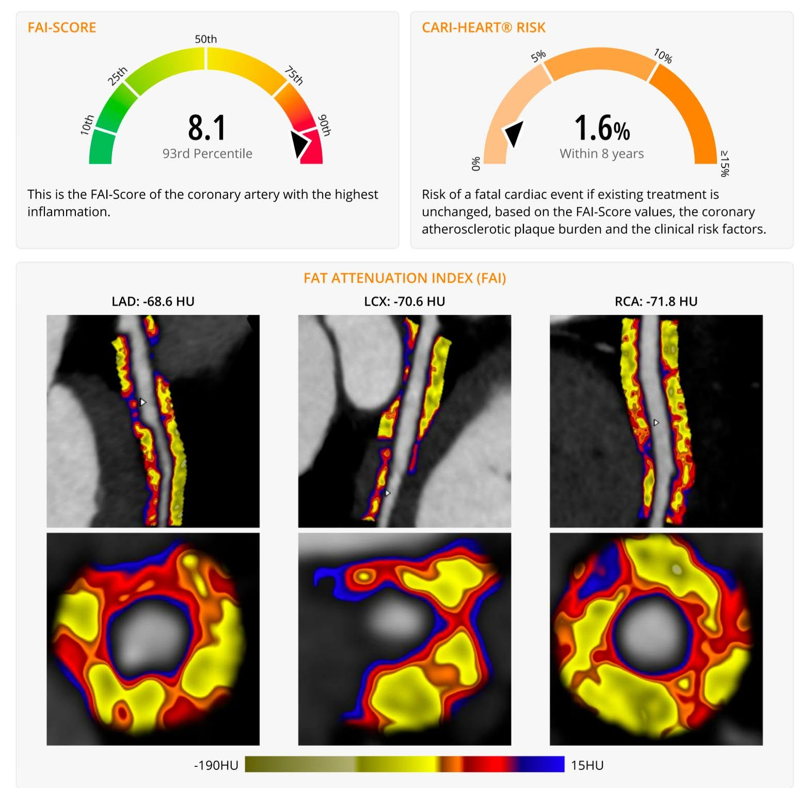

This CaRi-Heart test measures the level of inflammation in your arteries.
It is an AI analysis that is done on the images from a standard CT-angiogram.
To the best of my knowledge, it is really the only reliable way to make this measurement non-invasively (or without high levels of ionizing radiation). No blood test can properly measure this. It is probably the most accurate way to non-invasively measure residual inflammatory risk for CVD.
#cariheartHD #inflammationHD #colchicineHD #aiHD #faiHD #hscrpHD
Has anyone based in the UK, Europe or Australia had the CaRi-Heart analysis performed using this AI technology on their CT coronary angiograms? What was your result and did it change your recommended treatment?
CaRi-Heart goes beyond systemic inflammation and looks at coronary inflammation (the Fat Attenuation Index, or FAI) specifically, integrating this with CT findings and clinical risk factors to provide an individualised estimate of future cardiac risk.
caristo.comCari heart technologycaristo.com
I had this analysis done on my CTCA at the only cardiology practice offering it in Australia. It found that while my CTCA showed minimal stenosis (proximal LAD, proximal LC, and RCA, all causing <25% luminal stenosis - down from 70% stenosis two years ago in the same coronary arteries, following aggressive lipid-lowering therapy to 35-50 mg/dL or 0.9-1.3 mmol/L), the CaRi-Heart analysis identified markedly elevated coronary inflammation, with a highest-vessel FAI-Score of 8.1 in the LAD, corresponding to the 93rd percentile for age and sex. This was a surprising result, as my Hs CRP result is only 0.15 mg/L. The 8-year risk of fatal cardiac events is 1.6%, which remains low in absolute terms but is higher than expected for my age.
"Interpretation
This study demonstrates a clear discordance between coronary anatomy and coronary biology. While the CTCA shows only mild, non-obstructive atheroma with minimal calcified plaque burden, the FAI-Scores fall within the high inflammatory range, particularly in the LAD. In this case, the inflammatory signal may help explain the presence of early and non-calcified coronary disease. The combination of very high lipoprotein(a) (as noted clinically), mild multivessel plaque, and FAl in the 93rd percentile identifies a potentially modifiable inflammatory phenotype and an opportunity for early preventive intervention.
Management Considerations
- Given the presence of coronary plaque, markedly elevated Lp(a), and high inflammatory signal, a proactive lipid-lowering strategy is appropriate.
- Adjunctive anti-inflammatory strategies should be guided by overall risk profile.
- Tight blood-pressure control and comprehensive lifestyle optimization.
- Consider repeat CaRi-Heart/CT in 24-36 months to track biological and anatomical response."
My cardiologist recommended I start colchicine, which I took for two months but had to stop due to intolerable GI side effects. I will add that I also have familial hypercholesterolemia and extremely high Lp(a), which are the primary drivers of the build up of soft plaque in my coronary arteries. I'm 55yo.
Edited and added in September: I’ve restarted colchicine and have no side effects this time around.

